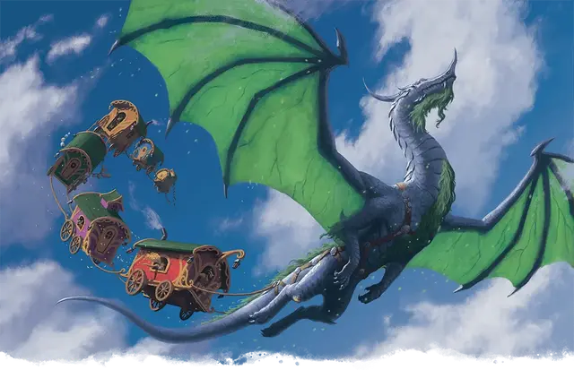

Пазродин
Pazrodine
Громадный Дракон (Луннокаменный), законно-нейтральный, именной НИП

Класс Доспеха 20 (природный доспех)
Хиты 330 (20к20 + 120)
Скорость 40 футов, летая 80 футов
| мод | спас | ||
|---|---|---|---|
| СИЛ | 22 | +6 | +6 |
| ЛОВ | 18 | +4 | +4 |
| ТЕЛ | 23 | +6 | +6 |
| мод | спас | ||
|---|---|---|---|
| ИНТ | 20 | +5 | +12 |
| МДР | 22 | +6 | +13 |
| ХАР | 26 | +8 | +15 |
Навыки Восприятие +13, Скрытность +11, Убеждение +15
Иммунитет к состояниям очарование
Чувства истинное зрение 120 футов, пассивное Восприятие 23
Языки Все, Телепатия 120 фт.
Опасность 21 (33000 опыта)
Бонус мастерства +7
Особенности
Страж рынка. Пазродин чувствует, когда что-то было украдено с Благого рынка. Она знает расстояние и направление до украденных вещей, как будто под действием заклинания поиск предмета [locate object].
Легендарное сопротивление (3/день). Если Пазродин провалит спасбросок, она может вместо этого сделать спасбросок успешным.
Действия
Мультиатака. Пазродин совершает одну атаку Укусом и две Когтями.
Укус. . Рукопашная атака оружием: +13 к попаданию, досягаемость 15 фт., одна цель. Попадание: 17 (2к10+6) колющего урона плюс 11 (2к10) урона излучением.
Коготь. . Рукопашная атака оружием: +13 к попаданию, досягаемость 10 фт., одна цель. Попадание: 13 (2к6+6) рубящего урона.
Хвост. . Рукопашная атака оружием: +13 к попаданию, досягаемость 20 фт., одна цель. Попадание: 10 (1к8+6) дробящего урона и если цель - существо, оно должно преуспеть в спасброске Силы Сл 21, иначе будет сбита с ног.
Использование заклинаний. Пазродин накладывает одно из следующих заклинаний, не требующее компонентов заклинания и использующее Харизму в качестве базовой характеристики (Сл спасброска от заклинания 23):
• Неограниченно: огонь фей [faerie fire];
• 2/день каждое: умиротворение [calm emotions], рассеивание магии [dispel magic], невидимость [invisibility];
• 1/день каждое: множественное лечение ран [mass cure wounds], возрождение [revivify].
Оружия дыхания (перезарядка 5-6). Дракон использует один из следующих видов оружия дыхания:
• Дыхание снов. Пазродин выдыхает туман в 90-футовом конусе. Каждое существо в этой области должно преуспеть в спасброске Телосложения Сл 21, иначе теряет сознание на 10 минут. Этот эффект заканчивается для существа, если оно получает урон или кто-то использует действие, чтобы его разбудить.
• Дыхание лунного света. Пазродин выдыхает луч лунного света линией длиной 120 фт. и шириной 10 фт.. Каждое существо в этой области должно совершить спасбросок Ловкости Сл 21, в случае провала получая 60 (11к10) урона излучением или половину урона при успехе.
Легендарные действия
Пазродин может совершить 3 легендарных действия, выбирая из представленных ниже вариантов. За один раз можно использовать только одно легендарное действие, и только в конце хода другого существа. Пазродин восстанавливает использованные легендарные действия в начале своего хода.
Хвост. Пазродин совершает одну атаку Хвостом.
Накладывание заклинания (стоит 2 действия). Пазродин использует Использование заклинаний.
Логово
Весь Благой рынок - это логово Пазродин. ПО Пазродин равен 22 (41 000 опыта), если столкновение с ней происходит на Благом рынке.
Действия логова
Логово имеет значение инициативы «20» (проигрывает при равенстве): Пазродин может выполнить одно из следующих действий в логове; Пазродин не может выполнять одно и то же действие в логове два раунда подряд:
Изгнание в сон. Пазродин выбирает существо, которое он видит в пределах 120 фт., и пытается отправить его в сон. Цель должна преуспеть в спасброске Харизмы Сл 15, иначе будет изгнана в безопасный демиплан до хода логова в следующем раунде. Пока цель находится там, она ошеломлена. Когда эффект заканчивается, цель вновь появляется в том же месте, которое она покинула, или в ближайшем свободном пространстве.
Переполняющие чувства. Пазродин нацеливается на трёх существ, которых она может видеть в пределах 30 футов. Звуки, зрелища и ароматы рынка усиливаются для этих существ, ошеломляя их яркими красками, громкой болтовней и сладкими ароматами. Каждая цель должна преуспеть в спасброске Мудрости Сл 15, иначе станет недееспособной до конца своего следующего хода.
Фруктовый вихрь. Фейские фрукты вылетают из близлежащих тележек, создавая вихрь из фруктов в виде цилиндра радиусом 10 футов и высотой 30 футов с центром в точке, находящейся в пределах 60 футов от Пазродин, пока в следующем раунде значение инициативы не достигнет "20". Когда существо впервые входит в область вихря в свой ход или начинает в ней свой ход, оно должно совершить спасбросок Ловкости Сл 15, получая 11 (2к10) дробящего урона при провале или половину этого урона при успехе.
Описание
Пазродин, луннокаменный дракон, наблюдающая за Благим рынком. Непревзойденный путешественник, она всегда ищет магические переходы, использующиеся для путешествий между Страной Фей и Материальным планом.
Пазродин никогда долго не задерживается на одном месте, и она хочет увидеть все чудеса, которые могут предложить Страной Фей и Материальным планом. Любопытная фея попросилась присоединиться к ее каравану, и вскоре у нее появился целый зверинец торговцев, сопровождающих ее в путешествиях. Пазродин стала относиться к этим торговцам-феям как к своим детям. Их неуемная радость помогает дракону увидеть мультивселенную с новых точек зрения.
Когда появляется Благой рынок, его продавцы собирают камни, листья и палки, чтобы соорудить огромное гнездо для Пазродин. Она отдыхает здесь, пока работает рынок.
Пазродин чувствует, когда на Благом рынке происходит кража. Она подбирается к преступникам и разрешает ситуацию ненасильственным путем, обычно используя свое Дыхание снов. Как только нарушители спокойствия приходят в себя, Пазродин вежливо, но твердо просит их покинуть рынок. Те, кто возражает, улетают в её когтях.
Если кто-нибудь приходит навестить Пазродин в её убежище, она приветствует их и с радостью отвечает на их вопросы о рынке. У дракона расслабляющий голос и манера поведения.